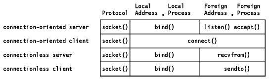

Table of Contents
Table of Contents  RARP
Concept
RARP
ConceptTable of Contents RARP
Concept
In this section we will introduce the concepts of port and socket.
Each process that wants to communicate with another process identifies itself to the TCP/IP protocol suite by one or more ports. A port is a 16-bit number, used by the host-to-host protocol to identify to which higher-level protocol or application program (process) it must deliver incoming messages.
As some higher-level programs are themselves protocols, standardized in the TCP/IP protocol suite, such as TELNET and FTP, they use the same port number in all TCP/IP implementations. Those "assigned" port numbers are called well-known ports and the standard applications well-known services.
The "well-known" ports are controlled and assigned by the Internet Assigned Numbers Authority (IANA) and on most systems can only be used by system processes or by programs executed by privileged users. The assigned "well-known" ports occupy port numbers in the range 0 to 1023. The ports with numbers in the range 1024-65535 are not controlled by the IANA and on most systems can be used by ordinary user-developed programs.
Confusion due to two different applications trying to use the same port numbers on one host is avoided by writing those applications to request an available port from TCP/IP. Because this port number is dynamically assigned, it may differ from one invocation of an application to the next.
UDP, TCP and ISO TP-4 all use the same "port principle". (Please see Figure - UDP, A Demultiplexer Based on Ports and Figure - TCP Connection.) To the extent possible, the same port numbers are used for the same services on top of UDP, TCP and ISO TP-4.
Let us first consider the following terminologies:
{protocol, local-address, local-process}
In the TCP/IP suite, for example:
{tcp, 193.44.234.3, 12345}
{protocol, local-address, local-process, foreign-address, foreign-process}
In the TCP/IP suite, for example:
{tcp, 193.44.234.3, 1500, 193.44.234.5, 21}
could be a valid association.
{protocol, local-address, local-process}
or
{protocol, foreign-address, foreign-process}
which specify each half of a connection.
The socket interface is one of several application programming interfaces (APIs) to the communication protocols. Designed to be a generic communication programming interface, it was first introduced by the 4.2BSD UNIX system. Although it has not been standardized, it has become a de facto industry standard.
4.2BSD allowed two different communication domains: Internet and UNIX. 4.3BSD has added the Xerox Network System (XNS) protocols and 4.4BSD will add an extended interface to support the ISO OSI protocols.
The following lists some basic socket interface calls. In the next section we shall see an example scenario of using these socket interface calls.
FORMAT: int sockfd = socket(int family, int type, int protocol)
where:
FORMAT: int bind(int sockfd, struct sockaddr *localaddr, int addrlen)
where:
{protocol, local-address, local-process, foreign-address, foreign-process}
FORMAT: int listen(int sockfd, int queue-size)
where:
FORMAT: int accept(int sockfd, struct sockaddr *foreign-address, int addrlen)
where:
Note that this accept call is issued by a server process rather than a client process. If there is a connection request waiting on the queue for this socket connection, accept takes the first request on the queue and creates another socket with the same properties as sockfd; otherwise, accept will block the caller process until a connection request arrives.
FORMAT: int connect(int sockfd, struct sockaddr *foreign-address, int addrlen)
where:
Note that this call is issued by a client process rather than a server process.
The read(), readv(sockfd, char *buffer, int addrlen), recv(), readfrom(), send(sockfd, msg, len, flags), write() calls can be used to receive and send data in an established socket association (or connection).
Note that these calls are similar to the standard read and write file I/O system calls.
FORMAT: int close(int sockfd)
where:
For more details, please refer to [Stevens] and the product implementation manuals listed in Bibliography.
As an example, consider the socket system calls for a connection-oriented
protocol.
Figure: Socket System Calls for Connection-Oriented Protocol
Consider the previous socket system calls in terms of
specifying the elements of the association:

Figure: Socket System Calls and Association
The socket interface is differentiated by the different services that are provided. Stream, datagram, and raw sockets each define a different service available to applications.
In this section we discuss how sockets are implemented in the IBM TCP/IP products.
The socket implementation in TCP/IP for VM and MVS supports two addressing families: AF_INET, and AF_IUCV. The AF_INET domain defines addressing in the Internet domain. The AF_IUCV domain defines addressing in the IUCV domain. In the IUCV domain, address spaces or virtual machines can use the socket interface to communicate with other virtual machines or address spaces within the same operating system. Only stream sockets are supported in the AF_IUCV domain.
In an MVS OpenEdition environment AF_UNIX sockets are also supported.
TCP/IP for OS/2 and TCP/IP for DOS both support the AF_INET addressing family. They both support the Stream and Datagram socket interfaces.
All AIX implementations support the AF_INET and AF_UNIX addressing families.
They all support the 4.3BSD sockets and the datagram and stream socket interfaces.
 User
Datagram Protocol (UDP)
User
Datagram Protocol (UDP)